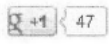
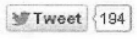
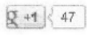
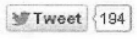

Se trata de un sistema operativo basado en Linux de codigo abierto y pensado para dispositivos moviles. Fue desarrollado por la OHA (Open Handset Alliance) formada por un conjunto de empresas como Google, Ebay, Intel, Nvidia, Mottorola, Samsung o Telefonica entre otras. Sale a luz en Noviembre de 2007. Desde entonces es lider en ventas con cada vez mas diferencia sobre sus competidores.
El sistema es ligero pues solo contiene 12 Millones de LCD (lineas de codigo) escritas en diferentes lenguajes como XML, C, Java y C++. Al tratarse de codigo abierto, la comunidad de desarrolladores es muy grande, por ello no es de extrañar el numero tan elevado de aplicaciones del que dispone, en torno al medio millon. Algunas de las cuales son:
- Audio: Google Music para escuchar musica, TuneIn para radio, Speaktoit para reconocimiento de voz
- Libros: Lectores de archivos Kindle, Aldiko
- Comunicacion: Skype, Viber, WhatsApp, eBudy
- Juegos: Angry Birds
- Redes sociales: FaceBook, Messenger, LinkedIn, Twitter
- Imagen: PicsArt para edicion de imagen, Instagram para compartirlas
- Television: TDT Android para ver tv online
- Widgets: Widgetsoid permite crear widgets
 


